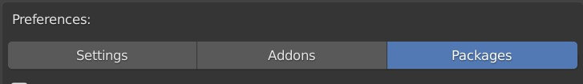

Introduction
Serpens allows you to create packages of nodes that can be installed by the user. You are free to develop these packages and share or sell them. A package is a collection of custom python nodes which work with the rest of Serpens nodes. To make that work you'll have to follow a couple of steps which are explained in this documentation.
If you develop a package, please let us know so we can promote it. There is also a built in marketplace which we can update over the air. This allows users to look for packages directly in the addon and not have to scout the internet to find them. Please reach out to us via discord when you have a package for us to share.

What you will do
Your package contains custom nodes which can then be used to generate addons. An addon consists of multiple node trees. When the addon is compiled, all node trees with changes will be compiled. Serpens finds the nodes that are marked as starting points (Panel, Operator, Function, etc.) and calls different functions which evaluate to a string of python code. In this string can be placeholders which call functions on the nodes sockets. These will then automatically deal with the connected nodes to give you the code of the connected node. This way the final code is built. When that process is done, Serpens puts all the code together and installs the module in blender. There are lots of utility functions which help you with the process explained above. Our goal when designing them was to make development of nodes as quick and easy as possible.
More info
A node can look however you want. You can write custom operators that allow you to select UI elements or have lists, enums, checkboxes, ...
You should not add custom socket types. Serpens is technically capable of dealing with them, but things like checking for errors could become more difficult and not work in some cases. If you feel like a socket type is missing, please let us know, the documentation will not go in detail when it comes to developing custom socket types.
You should make sure that your nodes have easy to understand names and are in categories that are fitting. Don't choose extreme colors for your nodes. You might want to consider to add a prefix in front of your nodes names to show that they belong together in one package.
Development
The basic structure in which you will develop is the following:
You will distribute a .zip file to others which can then be installed in the Serpens user preferences.
Your zip file can hold multiple folders. These folders represent the categories and are where the .py files for the nodes go. You can have python files that don't hold any nodes and just contain utility functions for example.
Example:
If you want to create a node in the Interface category, you would add a folder called Interface and a python file inside that folder. This is where the code for your node goes.
If you create a folder with a name that doesn't exist yet, that category will be created. You can not nest folders to create subcategories!
Finally you will need a package_info.json file which also goes in the .zip file. This file holds information on your package. This will be explained in more detail later.
An example for the structure of your package .zip file could look as follows:
my_package.zip
|
├── package_info.json
|
├── Interface
│ └── new_node.py
|
├── New Category
| ├──__init__.py
│ ├── my_node.py
│ └── my_other_node.py